| 1 | 13. Submitting to the App Store |
| 2 | |
| 3 | At this point you have a working app. It builds, runs on your phone, and does what it says on the tin — browses the web, saves bookmarks, and shares pages. That's the easy part. Getting it onto the App Store is a separate skill, and the first time you do it, something will go wrong. The submission walked through in this section went wrong in three different ways before it finally took — a name collision and two whitespace rejections — and all three are recorded here on purpose. A sanitized "click Submit and wait" walkthrough would not prepare you for what actually happens. |
| 4 | |
| 5 | One thing to keep in mind throughout this section: the app has three different names, and they do not all change together. |
| 6 | |
| 7 | • The Xcode project name is Wraply. That's what you see in the Navigator and in folder paths on disk. It does not change. |
| 8 | • The Bundle Identifier is com.ClaudeX26Bible.Wraply. That's Apple's internal unique ID for the app. It does not change either. |
| 9 | • The Display Name is what shows under the app icon on the home screen and on the App Store listing. Originally that was Wraply too — but "Wraply" was already taken on the App Store, so we changed the Display Name to Claude's Web Wrapper while leaving the project name and bundle ID alone. |
| 10 | |
| 11 | Every time this section uses the word "Wraply," it means the internal project name. Every time it uses "Claude's Web Wrapper," it means the storefront name. They refer to the same app. |
| 12 | |
| 13 | 📌 Building this to publish? Keeping your Xcode project named Wraply is fine — that's internal and doesn't conflict with anything. But do not submit your build to the App Store with "Wraply" or "Claude's Web Wrapper" as the Display Name. Both are already claimed. Pick your own Display Name before you archive, the same way Apple forced us to pick one. Your bundle identifier will be different from ours anyway (it uses your Organization Identifier from Section 1.3), so Apple sees it as a distinct app — just give it a distinct name too. |
| 14 | |
| 15 | 13.1 Before you archive, open the project settings and check a handful of values. Here is how you get there: |
| 16 | |
| 17 | • In the Project Navigator (the leftmost sidebar, the folder-tree icon — or press Cmd+1), click the very top entry: the blue Xcode project icon labeled Wraply. Not the folder below it, the blue icon. |
| 18 | • The center of the window changes. At the top you will see two columns of headings: PROJECT (with "Wraply" under it) and TARGETS (with "Wraply" under it as well). Click the Wraply under TARGETS. |
| 19 | • Now a row of tabs appears across the top of the editor: General, Signing & Capabilities, Resource Tags, Info, Build Settings, Build Phases, Build Rules, Package Dependencies. Click General. This is "the General tab." Every time the book says "go to the General tab," this is where it means. |
| 20 | |
| 21 | [Fig. W.19 — General tab with Display Name and Bundle Identifier visible] |
W.19 — General tab with Display Name and Bundle Identifier visible 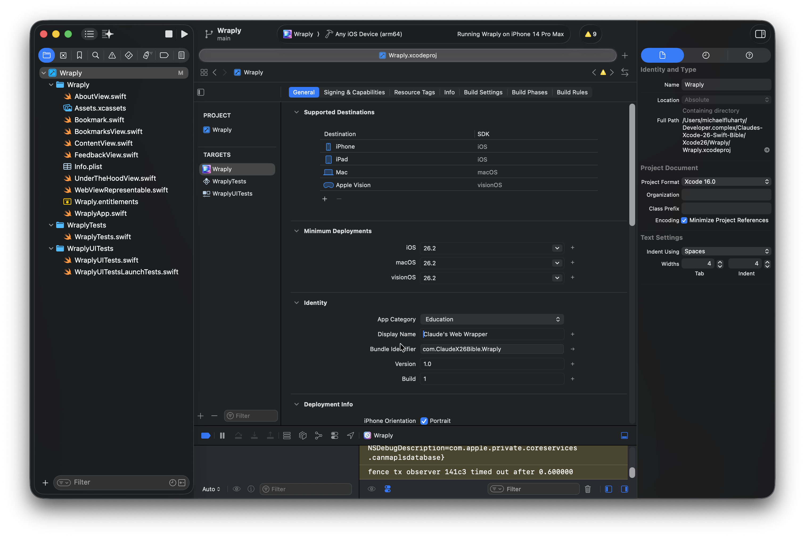 | |
| 22 | |
| 23 | Check these values on the General tab: |
| 24 | |
| 25 | • Display Name: Claude's Web Wrapper |
| 26 | • Bundle Identifier: com.ClaudeX26Bible.Wraply (or yours) |
| 27 | • Version: 1.0 |
| 28 | • Build: 1 |
| 29 | • Minimum Deployments: iOS 17.0 (SwiftData requires it) |
| 30 | • Supported Destinations: iPhone, iPad |
| 31 | |
| 32 | 13.2 Set the scheme to Any iOS Device (arm64) in the top bar of Xcode (between the Run/Stop buttons and the status area). You cannot archive with a simulator selected — the archive command will be grayed out. |
| 33 | |
| 34 | 13.3 Product > Archive. Xcode builds the release version and opens the Organizer window when done. The Organizer is where your archives live. At the top of the Archives tab you will see your new archive: Wraply, 1.0 (1), today's date, iOS App Archive. On the right side of the window you will see two action buttons: Distribute App and Validate App. |
| 35 | |
| 36 | [Fig. W.20 — Organizer window with freshly archived Wraply 1.0 (1)] |
W.20 — Organizer window with freshly archived Wraply 1.0 (1) 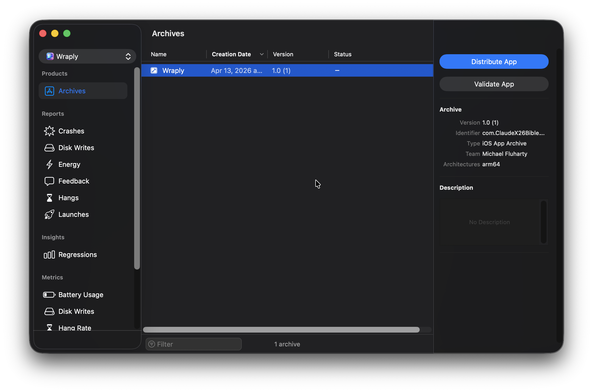 | |
| 37 | |
| 38 | 13.4 Click Validate App — not Distribute App. Validate App is a pre-flight check that talks to Apple's servers and verifies that your archive is ready to submit: signing is valid, the bundle ID is registered, assets are correct, and — critically — the display name is available. Running Validate first is cheaper than running Distribute. If something is wrong, Validate tells you in a minute or two, before you have committed to uploading a gigabyte of binary. |
| 39 | |
| 40 | A dialog opens titled Select a method for validation: with two options — Validate (recommended, uses default App Store Connect settings) and Custom. Leave Validate selected and click the Validate button in the bottom right. |
| 41 | |
| 42 | [Fig. W.21 — Select a method for validation dialog] |
W.21 — Select a method for validation dialog 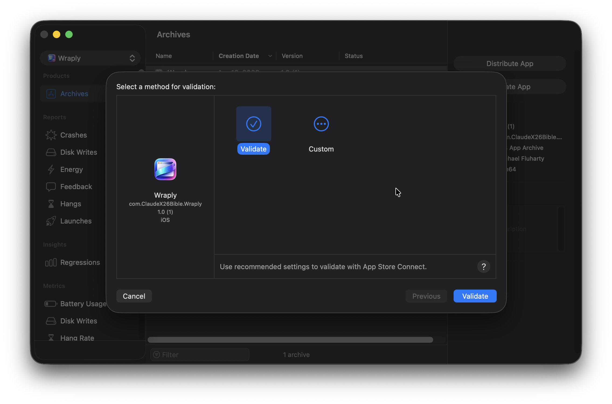 | |
| 43 | |
| 44 | 13.5 Xcode shows a form titled Validate with App Store Connect with this message: "Your app must be registered with App Store Connect before it can be uploaded. Xcode will create an app record with the following properties." |
| 45 | |
| 46 | Below the message you will see four fields, auto-populated (some editable, some locked): |
| 47 | |
| 48 | • Name: Wraply |
| 49 | • SKU: com.ClaudeX26Bible.Wraply |
| 50 | • Primary Language: English (United States) |
| 51 | • Bundle Identifier: com.ClaudeX26Bible.Wraply |
| 52 | |
| 53 | Some of these fields are editable right there in the dialog. Name and SKU can be retyped; Primary Language has a dropdown. Bundle Identifier is locked — it is read directly from your archive's Info.plist and cannot be changed here. The Name field is the one that will be used as your App Store listing name. Xcode pre-fills it with your target name — which is Wraply. |
| 54 | |
| 55 | [Fig. W.22 — Validate form: Name field populated with "Wraply"] |
W.22 — Validate form: Name field populated with "Wraply" | |
| 56 | |
| 57 | 13.6 Click Next. Xcode talks to Apple's servers for a few seconds, then stops and shows you a red X and this error: |
| 58 | |
| 59 | App Record Creation Error — App Record Creation failed due to request containing an attribute already in use. The App Name you entered is already being used. If you have trademark rights to this name and would like it released for your use, submit a claim. |
| 60 | |
| 61 | Someone else has the name "Wraply" on the App Store. You cannot use it, and Apple caught it here at the pre-flight stage rather than two days from now in Review. |
| 62 | |
| 63 | [Fig. W.23 — App Record Creation Error: name already in use] |
W.23 — App Record Creation Error: name already in use 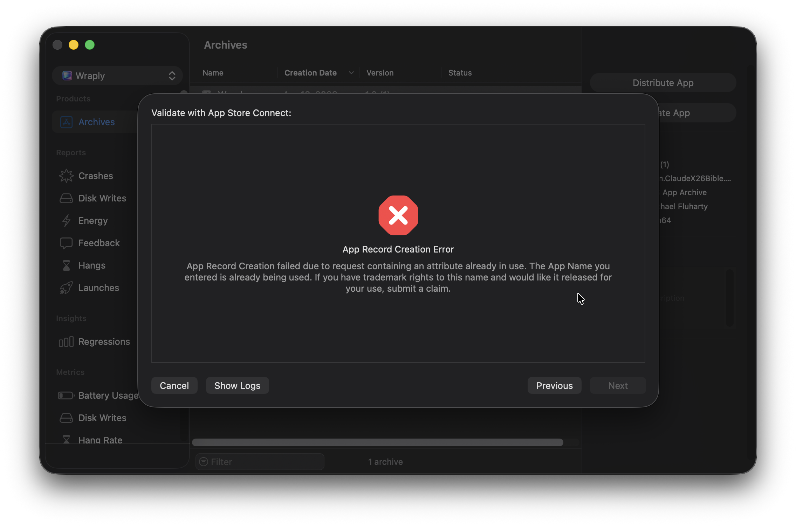 | |
| 64 | |
| 65 | This is the first Teaching Moment of the submission. Apple's pre-flight catches the name collision here rather than after a full upload. If you had clicked Distribute first instead of Validate, you would have gone through the whole upload flow — minutes of signing and pushing bytes — only to hit this same error at the end. That's why you Validate first. |
| 66 | |
| 67 | 13.7 Click Cancel to get out of the Validate flow. You need to change the Display Name. Go back to Xcode, click the blue Wraply project icon, click the Wraply target, go to the General tab (from Section 13.1), and find the Display Name field under the Identity section. Change it from Wraply to Claude's Web Wrapper. |
| 68 | |
| 69 | We picked Claude's Web Wrapper because this app ships as a companion to Claude's X26 Swift6 Bible — tying the storefront name to the book and its author (Claude) kept the branding consistent. When you do this for your own app, the only rule is that the display name you pick must not already be taken on the App Store. |
| 70 | |
| 71 | While you're here, you can also check the App Category picker in the same Identity section. Set it to something reasonable; we will lock it in on the App Store Connect side later too. For a web browser / source code viewer, Education is the strongest choice. Books is tempting — this is a book companion — but Apple reads "Books" as "ebook reader or library" and tends to reject under Guideline 4.2 Minimum Functionality when the category does not match the content. We talked ourselves out of Books before the first submission attempt, and you should too. |
| 72 | |
| 73 | [Fig. W.24 — Xcode General tab: Display Name updated to "Claude's Web Wrapper"] |
W.24 — Xcode General tab: Display Name updated to "Claude's Web Wrapper" | |
| 74 | |
| 75 | 13.8 Re-archive the project. Product > Archive again. Changing the Display Name invalidates the existing archive — the old archive still has "Wraply" baked into its metadata, and Xcode will happily let you validate it and hit the same error again. A fresh archive picks up the new Display Name. |
| 76 | |
| 77 | When the archive completes, the Organizer opens with both archives listed — the old one (still named Wraply) and the new one (still named Wraply on the archive row, because the archive row shows the target name, which hasn't changed). Click the newest archive. The action buttons — Distribute App and Validate App — come back up on the right. |
| 78 | |
| 79 | Click Validate App. Select the Validate method. Click Validate. |
| 80 | |
| 81 | 13.9 The Validate with App Store Connect form appears again. Check the Name field. |
| 82 | |
| 83 | It still says Wraply. |
| 84 | |
| 85 | This is the single most important thing to know about submitting to the App Store. The Display Name you set in the General tab does not automatically flow into the Name field of the Validate or Distribute dialog. The dialog pre-fills its Name field from the target name (which is still "Wraply"), not from the Display Name. You have to change it here too. |
| 86 | |
| 87 | [Fig. W.25 — Validate form: Name still auto-populates as "Wraply"] |
W.25 — Validate form: Name still auto-populates as "Wraply" 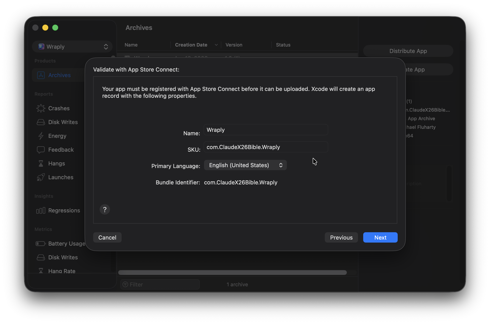 | |
| 88 | |
| 89 | 📌 The trap you will fall into. The first time this happens, you will assume something didn't save. You will close the dialog, go back to General, confirm that Display Name really does say Claude's Web Wrapper, re-type it anyway, re-archive, open Organizer, click Validate, watch "Wraply" reappear in the Name field, and start to lose your mind. Maybe you delete the old archive thinking it's stale. Maybe you clean the build folder. None of it helps. The Organizer fills up with stacked "Wraply 1.0 (1)" archives from every re-attempt — none of them are wrong, they just were not the problem. |
| 90 | |
| 91 | [Fig. W.25b — Multiple Wraply archives stacking in the Organizer from re-archive attempts] |
W.25b — Multiple Wraply archives stacking in the Organizer from re-archive attempts 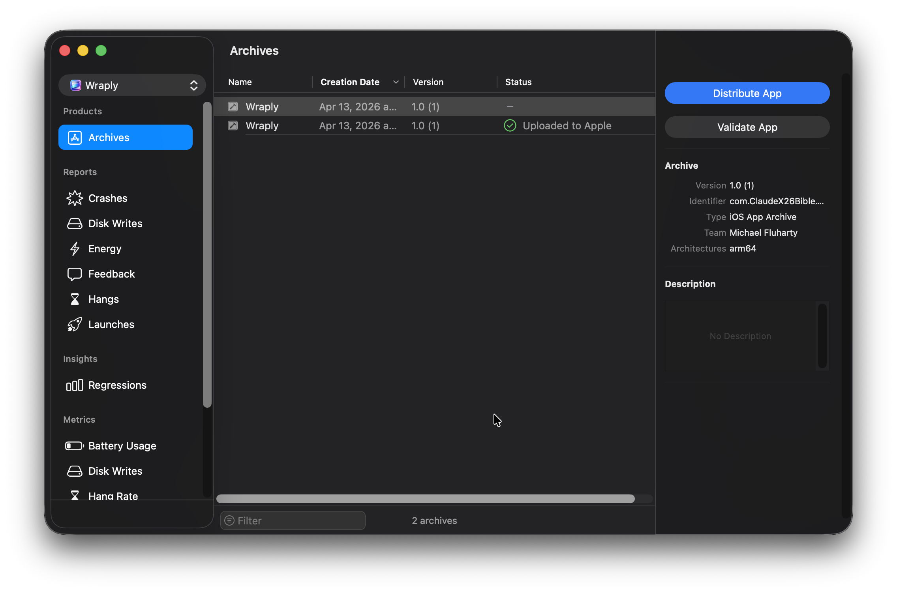 | |
| 92 | |
| 93 | 📌 Tip: use the Build number as an archive label. Before each re-archive, bump the Build field in the General tab by one (1 → 2 → 3 → ...). The Organizer shows the build number alongside each archive, so 1.0 (1), 1.0 (2), 1.0 (3) become visually distinct rows. You can then tell at a glance which archive is the newest, click it, and right-click → Delete on the older ones without wondering which is which. Apple doesn't care about gaps in your build numbers — they only care that a build number isn't reused. |
| 94 | 📌 The Name field is not reading from anywhere you can change outside this dialog. The only fix is to type the new name into this Name field, every single time you run Validate or Distribute, until your submission is accepted. That is the bug. It is not your fault, and you are not missing a setting somewhere. |
| 95 | |
| 96 | 13.10 Click inside the Name field. Select the whole word "Wraply" and delete it. The field will show just a cursor. |
| 97 | |
| 98 | [Fig. W.26 — Name field mid-edit: backspaced down to "W"] |
W.26 — Name field mid-edit: backspaced down to "W" | |
| 99 | |
| 100 | 13.11 Type Claude's Web Wrapper. Press Tab to move focus to the next field and commit the change. Do not press Enter — that may submit the form prematurely on some systems. |
| 101 | |
| 102 | [Fig. W.27 — Name field: "Claude's Web Wrapper" typed cleanly] |
W.27 — Name field: "Claude's Web Wrapper" typed cleanly 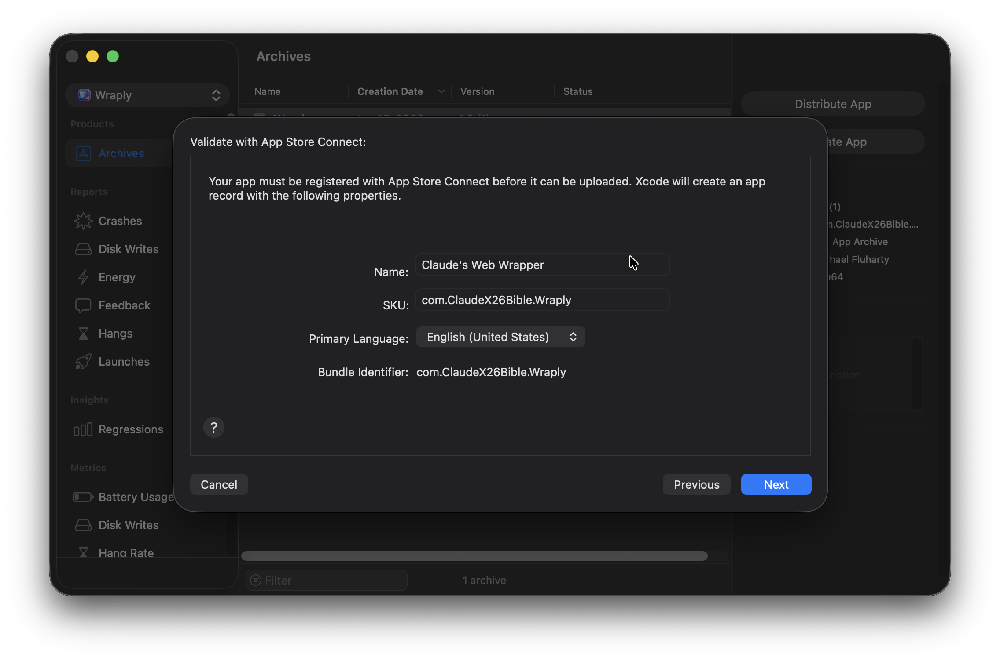 | |
| 103 | |
| 104 | 📌 Whitespace warning. If you are backspacing and retyping fast, you can easily leave an invisible leading or trailing space in the Name field. You will not see it. Apple's pre-flight validator doesn't always catch it either. What happens later is that your build uploads successfully, Apple starts processing it, and then emails you an ITMS-90694: Invalid bundle display name rejection and your build silently disappears from App Store Connect. This is covered in detail below — but you can avoid it here by clearing the field completely with Cmd+A Delete, retyping cleanly, and then clicking somewhere else in the dialog to blur the field before clicking Next. |
| 105 | |
| 106 | 13.12 Click Next. Xcode shows a progress dialog labeled Validate with App Store Connect with the status Preparing — Locating signing assets... This step can take anywhere from ten seconds to a minute. Let it run. |
| 107 | |
| 108 | [Fig. W.28 — Preparing, Locating signing assets] |
W.28 — Preparing, Locating signing assets 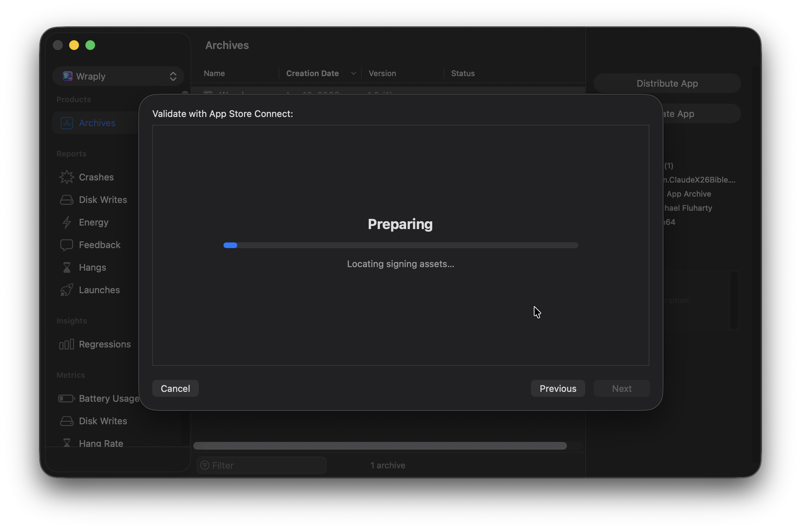 | |
| 109 | |
| 110 | 13.13 When validation finishes, the dialog shows a green check and the message App validation complete: Wraply 1.0 (1) validated. Your app successfully passed all validation checks. Click Done. |
| 111 | |
| 112 | [Fig. W.29 — App validation complete: Wraply 1.0 (1) validated] |
W.29 — App validation complete: Wraply 1.0 (1) validated 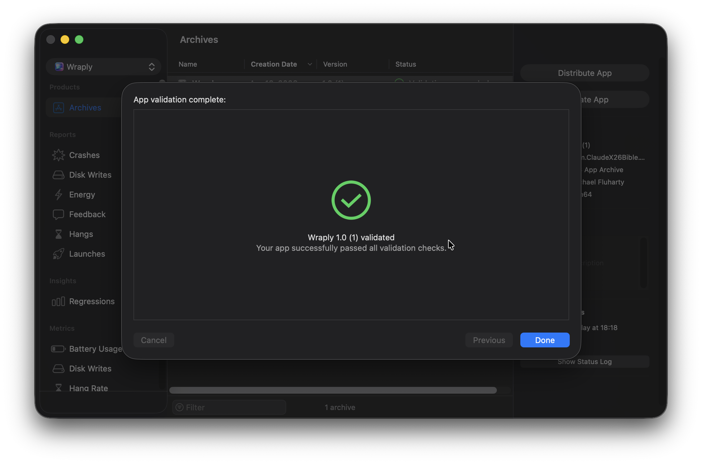 | |
| 113 | |
| 114 | The internal name "Wraply" still appears in this message. That is fine. The validation is about the archive (which is named Wraply on disk) and the bundle identifier, not the display name. Your Claude's Web Wrapper display name is registered with App Store Connect; that's what matters. |
| 115 | |
| 116 | 13.14 Now you can upload. Click Distribute App in the Organizer. A dialog appears titled Select a method for distribution: with six icons: App Store Connect, TestFlight Internal Only, Release Testing, Enterprise, Debugging, Custom. |
| 117 | |
| 118 | Click App Store Connect and then click the Distribute button in the bottom right. |
| 119 | |
| 120 | [Fig. W.30 — Select a method for distribution: App Store Connect] |
W.30 — Select a method for distribution: App Store Connect 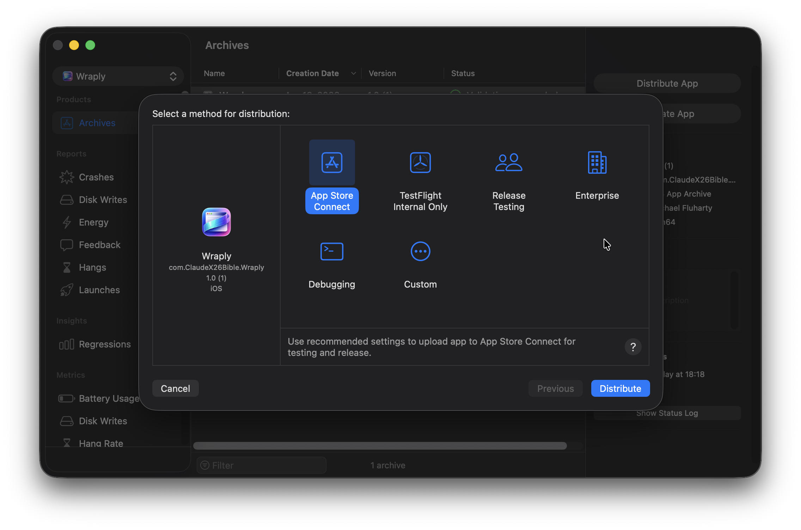 | |
| 121 | |
| 122 | 13.15 Xcode shows a progress dialog labeled Upload for App Store Connect with the status Processing — Signing Wraply.app... followed by upload progress. This step takes one to three minutes depending on your connection speed and the size of the build. |
| 123 | |
| 124 | [Fig. W.31 — Processing, Signing Wraply.app] |
W.31 — Processing, Signing Wraply.app 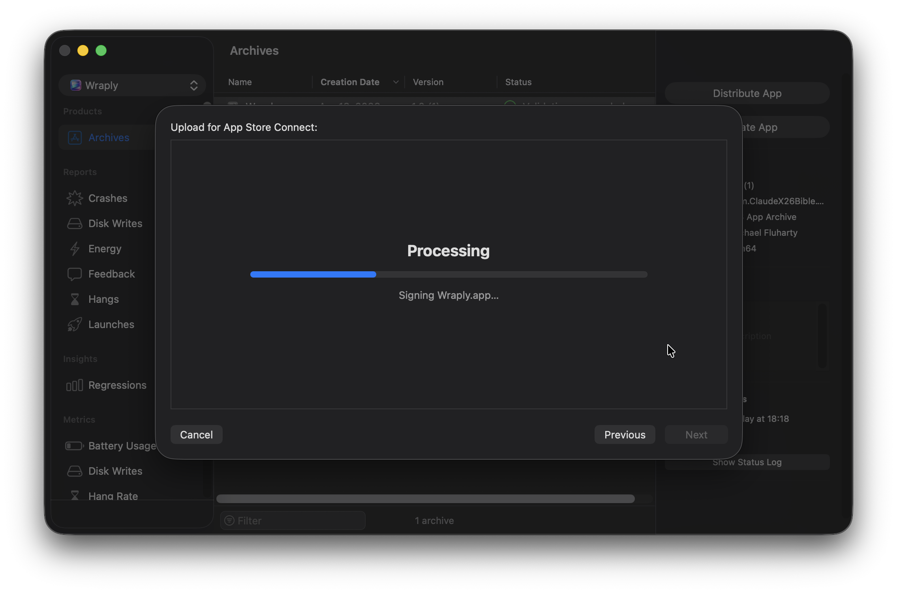 | |
| 125 | |
| 126 | 13.16 When the upload finishes, the dialog shows a green check and the message App upload complete: Wraply 1.0 (1) uploaded. Click Done. |
| 127 | |
| 128 | [Fig. W.32 — App upload complete: Wraply 1.0 (1) uploaded] |
W.32 — App upload complete: Wraply 1.0 (1) uploaded 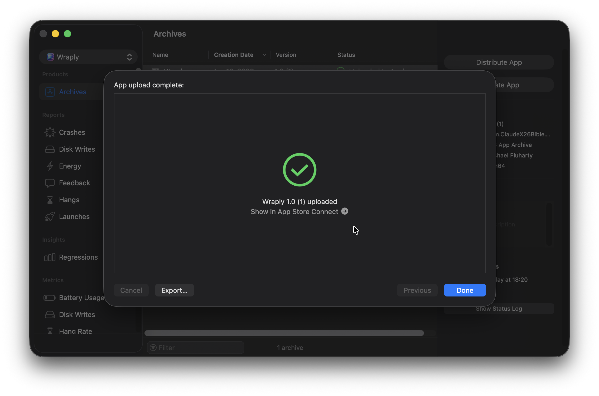 | |
| 129 | |
| 130 | Your archive is now on Apple's servers. The rest of the submission happens in the browser, at appstoreconnect.apple.com. |
| 131 | |
| 132 | 13.17 Open a browser and go to appstoreconnect.apple.com. Log in with your Apple Developer account. Click Apps in the top navigation. You will see a grid of app tiles — any apps you have previously submitted, plus the one you just created. |
| 133 | |
| 134 | Claude's Web Wrapper should be in the grid with a status badge saying iOS 1.0 — Prepare for Submission. The app icon slot will be empty (a wireframe placeholder) because the uploaded build hasn't been processed yet. |
| 135 | |
| 136 | [Fig. W.33 — App Store Connect Apps list with Claude's Web Wrapper] |
W.33 — App Store Connect Apps list with Claude's Web Wrapper 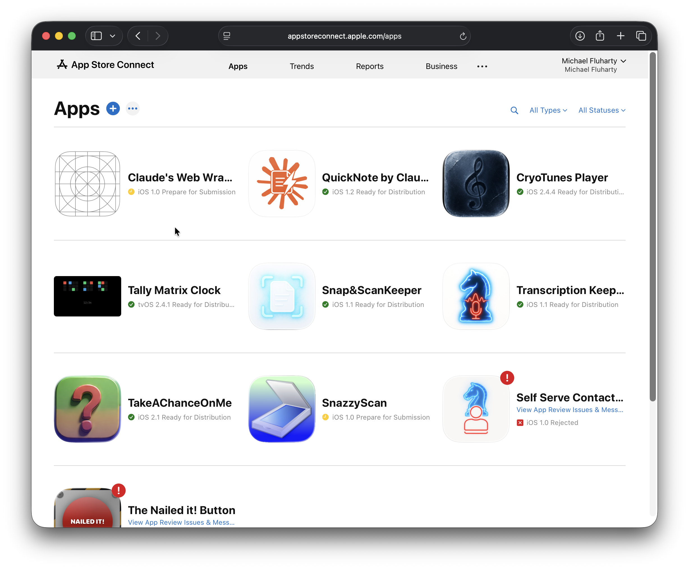 | |
| 137 | |
| 138 | 13.18 Click Claude's Web Wrapper to open the app page. You will see a left sidebar with sections (App Information, Pricing and Availability, App Privacy, Age Rating, App Review) and a main content area for the iOS 1.0 version page. Work through the fields: |
| 139 | |
| 140 | • Promotional Text (170 character maximum, can be updated without resubmitting): Claude's Web Wrapper — browse the web, save bookmarks, and explore the app's own Swift source code. Companion app for Claude's X26 Swift6 Bible. |
| 141 | • Description (4000 character maximum): A web browser built as a companion app for Claude's X26 Swift6 Bible. Browse any website, save bookmarks, and share pages. Under the Hood lets you read and copy every Swift source file — paste into Xcode and learn by building. Educational tool for iOS development. |
| 142 | • Keywords (100 character maximum total, comma-separated with no spaces after the commas): swift,xcode,learn,code,browser,bookmark,source,education,ios,development |
| 143 | • Support URL: https://fluharty.me/projects/swift-bible.html (or your own page) |
| 144 | • Marketing URL: optional, leave blank |
| 145 | • Version: 1.0 |
| 146 | • Copyright: 2026 Michael Fluharty (or your name) |
| 147 | |
| 148 | [Fig. W.34 — iOS 1.0 Version page with promotional text, description, keywords filled in] |
W.34 — iOS 1.0 Version page with promotional text, description, keywords filled in 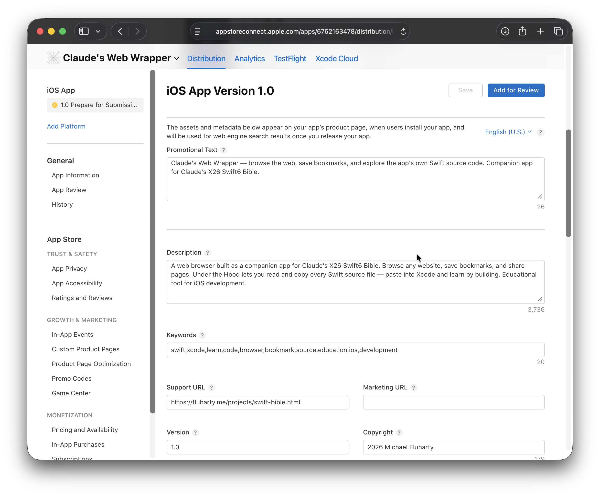 | |
| 149 | |
| 150 | 13.19 Scroll down to the Build section of the iOS 1.0 page. If your upload has finished processing, you will see a + Add Build button or a dropdown listing your build. Click it, select 1.0 (1), answer the Encryption compliance prompt (None of the algorithms mentioned above), and confirm. |
| 151 | |
| 152 | If the Build section is still empty — just the sentence "Upload your builds using one of several tools" — processing has not finished yet. Normal processing time is under ten minutes. |
| 153 | |
| 154 | If processing takes more than thirty minutes, something is wrong. Apple does not show processing failures in App Store Connect. They email you. Switch to your inbox. This is the second Teaching Moment: a build that does not appear is never a build that is "still processing." It is a build that was silently rejected by email. |
| 155 | |
| 156 | [Fig. W.35 — Build section empty after a long wait: something is wrong] |
W.35 — Build section empty after a long wait: something is wrong 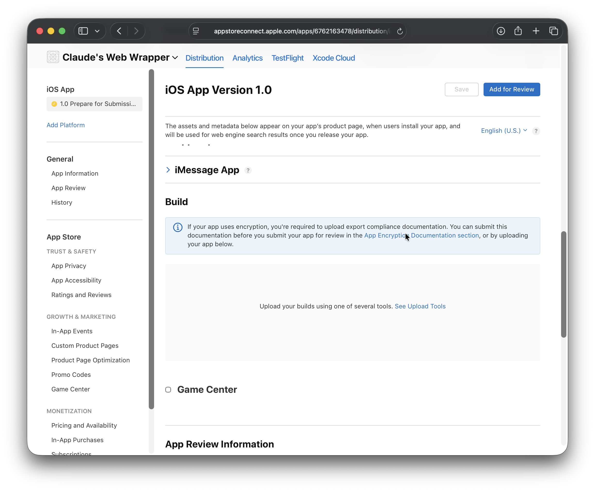 | |
| 157 | |
| 158 | 13.20 Check your email. If there is a message from App Store Connect titled "Apple Developer Relations" about your build, open it. The body tells you the exact failure. |
| 159 | |
| 160 | In this submission, the message read: |
| 161 | |
| 162 | 📌 ITMS-90694: Invalid bundle display name — ' Claude's Web Wrapper ' starts with a whitespace character. |
| 163 | |
| 164 | The leading and trailing quote marks in the message are Apple's way of showing you what the display name looks like — including whitespace. The space before the C is a leading space that snuck into the Name field during the backspace-and-retype in Section 13.10. You didn't see it when you typed. Apple's validator didn't catch it during pre-flight validation either — that check looks at the Name value being sent, but a leading space is a legal string. The silent rejection happens later, at the bundle processing stage. |
| 165 | |
| 166 | [Fig. W.36 — ITMS-90694 rejection email: whitespace in display name] |
W.36 — ITMS-90694 rejection email: whitespace in display name 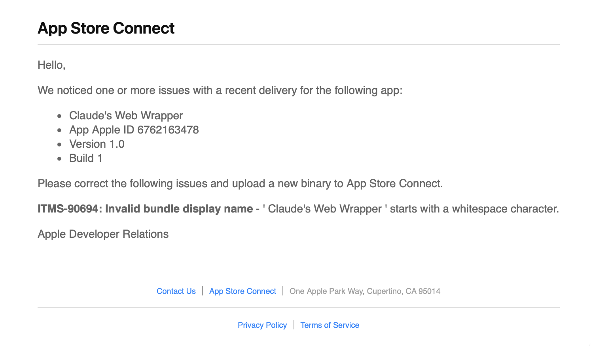 | |
| 167 | |
| 168 | 📌 The invisible whitespace problem. Typing names into validation dialogs is fragile. When you backspace through an auto-populated value and retype, the field can end up with a leading or trailing space from before the first character or after the last one. You will never see it on screen. App Store Connect will never show you the error in its UI. The build will upload, pass its quick pre-flight, start processing, and then silently vanish from the Build dropdown while Apple emails you. The rule is: always check your inbox when a build hasn't appeared in App Store Connect within thirty minutes. |
| 169 | |
| 170 | 13.21 Back in Xcode, fix the whitespace. Go to the General tab, click inside the Display Name field, press Cmd+A to select everything, Delete to clear, then type Claude's Web Wrapper fresh. Click anywhere outside the field to commit. Also bump the Build number from 1 to 2 — you cannot re-upload the same build number, and Apple tracks build numbers strictly. |
| 171 | |
| 172 | If you re-archive and hit the same ITMS-90694 whitespace rejection again, you likely still have an invisible trailing space. The real submission documented here hit this loop twice. At one point the problem looked like it might be the apostrophe in "Claude's" — special characters in display names have been known to cause trouble — but stripping the apostrophe to try "Claudes Web Wrapper" did not fix it either. The actual cause was always a stray space. The fix is always the same: clear with Cmd+A Delete, type cleanly, tab out, archive. Slow down. |
| 173 | |
| 174 | 📌 Do not delete the app record from App Store Connect to "reset" things. When a submission is stuck, it is tempting to open App Store Connect, delete the app record, and try again from Xcode thinking a clean slate will fix it. It will not. Apple tracks deleted records by bundle identifier. Once your bundle ID is tied to a record in Removed Apps state, any new Validate or Distribute attempt comes back with "App record with bundle identifier ... was previously removed from App Store Connect. Go to App Store Connect to restore the app." The only fix is in the web: Apps → filter Removed Apps → click your app → Restore. Then retry Validate. Leave the app record alone until the submission is through review. |
| 175 | |
| 176 | [Fig. W.37 — The "previously removed" error, triggered by deleting the app record] |
W.37 — The "previously removed" error, triggered by deleting the app record 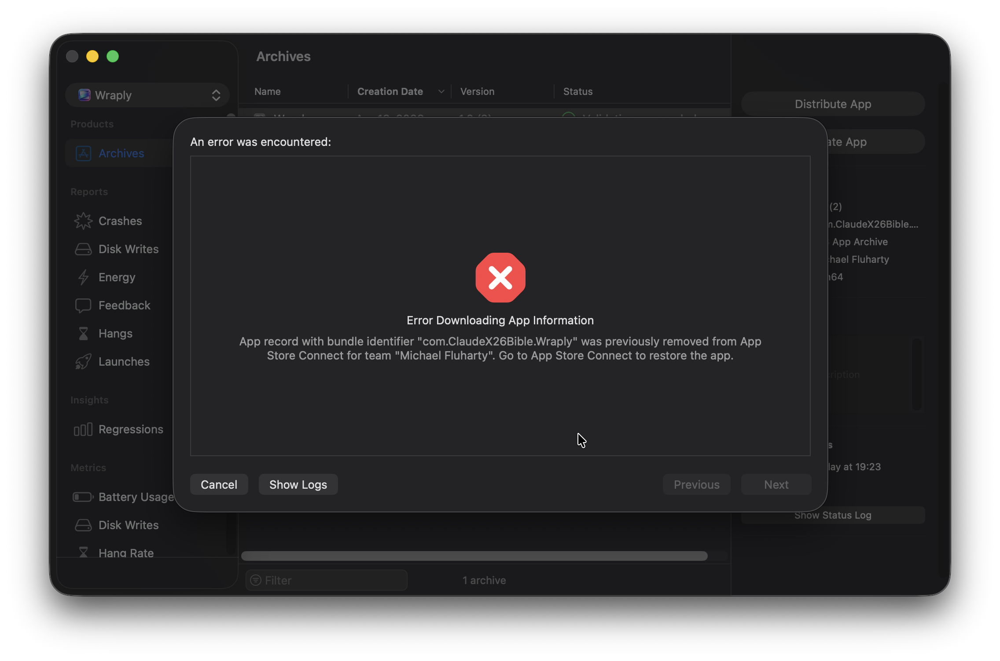 | |
| 177 | |
| 178 | 📌 The nuclear option. If the submission has completely collapsed — bundle ID tangled, nothing you try in Validate works, Restore doesn't help — you can start fresh: create a new Xcode project with a different Product Name (giving you a new Organization Identifier + Product Name combination, and therefore a fresh bundle ID), copy your source files over, and submit that. It's a hard reset, and you lose your prior archive history, but it always works. We planned on this as the fallback during the real submission and didn't end up needing it. |
| 179 | |
| 180 | 13.22 Back in the Organizer, with your Build 2 archive selected, click Validate App. Pick the Validate method, fill in the Name field cleanly (Claude's Web Wrapper), and click Next. Validation completes: Wraply 1.0 (2) validated. Click Done. Then click Distribute App, choose App Store Connect, click Distribute. Xcode signs and uploads Build 2. |
| 181 | |
| 182 | When the upload dialog reports App upload complete: Wraply 1.0 (2) uploaded, you are done in Xcode for this submission. |
| 183 | |
| 184 | [Fig. W.38 — Build 2 uploaded successfully] |
W.38 — Build 2 uploaded successfully 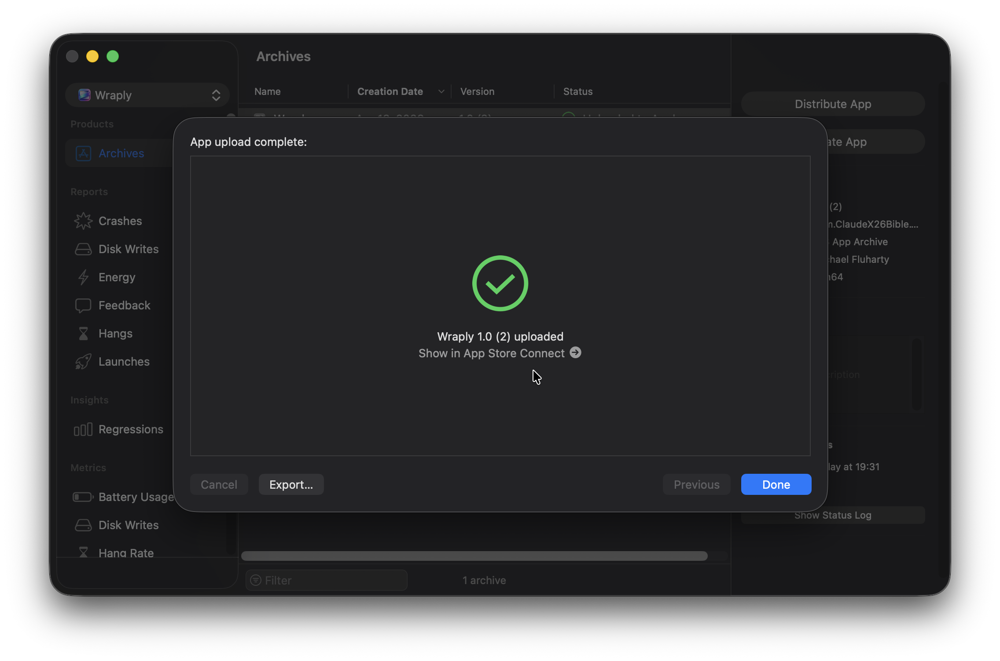 | |
| 185 | |
| 186 | 13.23 In the upload-complete dialog, below the green check, you'll see the text Show in App Store Connect with a small arrow-in-a-circle icon next to it. Click that icon. It launches your default web browser, opens appstoreconnect.apple.com, and prompts you to log in with your Apple Developer account if you aren't already. |
| 187 | |
| 188 | [Fig. W.32b — App Store Connect login prompt after clicking the arrow link] Once you're in, you land on your Apps grid — a tiled list of every app you've ever created in App Store Connect. |
W.32b — App Store Connect login prompt after clicking the arrow link 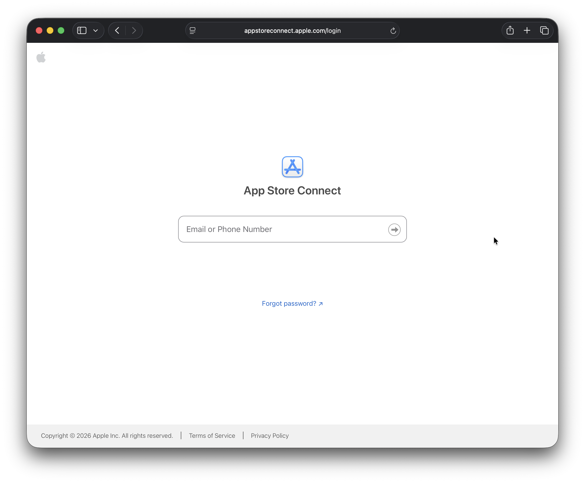 | |
| 189 | |
| 190 | Find Claude's Web Wrapper in the grid. Its icon slot will be a wireframe placeholder because your app icon hasn't been processed as an App Store listing icon yet — that comes after the build is attached to the version. Click the tile. |
| 191 | |
| 192 | [Fig. W.33 — App Store Connect Apps grid: Claude's Web Wrapper tile with wireframe placeholder icon] |
W.33 — App Store Connect Apps grid: Claude's Web Wrapper tile with wireframe placeholder icon | |
| 193 | |
| 194 | You're now on the app's page. The default tab is Distribution — that's where you were headed. Wait a few minutes for Apple to finish processing Build 2; this time processing should succeed because the whitespace is fixed and the app record has been restored. You'll get a "The following build has completed processing" email when it's ready. |
| 195 | |
| 196 | 13.24 Scroll down to the Build section of the iOS 1.0 page. If processing has completed, you will see the + Add Build button (a small blue circle with a plus sign) next to the section title, and an Add Build button inside the section. |
| 197 | |
| 198 | [Fig. W.38b — iOS App Version 1.0 page: Build section with + Add Build button visible] |
W.38b — iOS App Version 1.0 page: Build section with + Add Build button visible 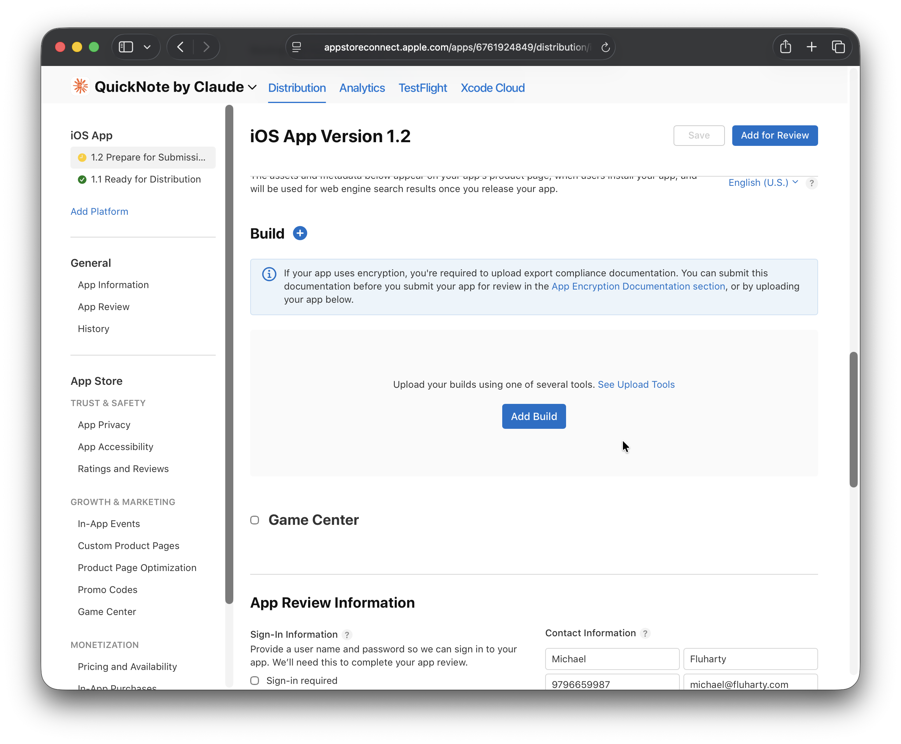 | |
| 199 | |
| 200 | 📌 If the Add Build button doesn't appear, App Store Connect is holding onto unsaved edits. Scroll up, click Save in the top right of the page to commit everything you've typed so far (promotional text, description, keywords, screenshots — none of it is saved automatically), then reload the page in your browser. The + Add Build button should now be there. This is a pattern to remember: any time a button or status on an App Store Connect page seems to be missing, try Save → reload. |
| 201 | |
| 202 | Click + Add Build. A modal titled Add Build appears with a list of available builds and a note about encryption compliance. Pick 2 from the list. |
| 203 | |
| 204 | [Fig. W.39 — Add Build dialog: 1.0 (2) selected with "Missing Compliance" before answering encryption] |
W.39 — Add Build dialog: 1.0 (2) selected with "Missing Compliance" before answering encryption 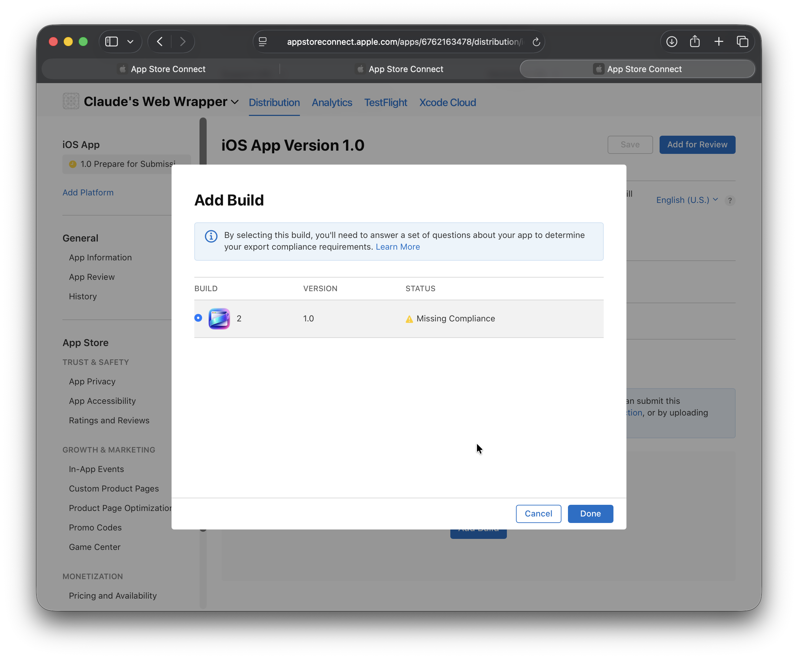 | |
| 205 | |
| 206 | 13.25 Now fill in the remaining required sections in App Store Connect. In the left sidebar: |
| 207 | |
| 208 | • App Information — set Primary Category to Education. Scroll to Content Rights Information and choose This app does not contain, show, or access third-party content. (If you pick Books, Apple reads it as "ebook reader or library" and tends to reject under Guideline 4.2 Minimum Functionality. Education is the safe choice for a companion app.) |
| 209 | |
| 210 | [Fig. W.39c — Content Rights Information: "No, it does not contain, show, or access third-party content"] |
W.39c — Content Rights Information: "No, it does not contain, show, or access third-party content" 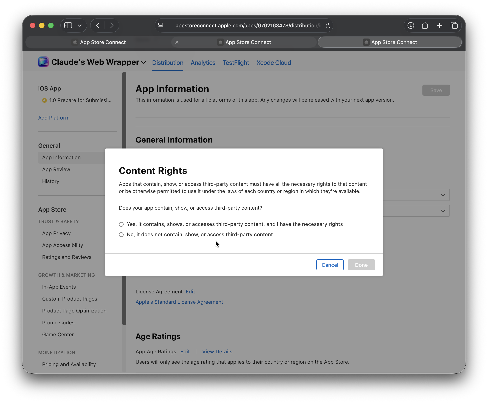 | |
| 211 | |
| 212 | • Pricing and Availability — set Availability first, then Price. If you set Price before Availability, the Availability wizard later asks you additional questions about where your pricing applies (including EU-specific requirements that vary by region), adding steps. Configuring Availability first lets you pick your regions cleanly, and the Price step then applies across that selection in one pass. |
| 213 | • App Availability → click Set Up Availability → choose Specific Countries or Regions and select United States and Canada first. Skip the European Union, United Kingdom, and other regions on your first submission. Those regions have their own legal compliance requirements (GDPR data processing disclosures, EU Digital Services Act, digital service taxes in some countries) that are better dealt with as a follow-up once your app is live in North America. You can always extend availability to more regions later from the same page, without resubmitting. |
| 214 | • Price Schedule → click Add Pricing → choose Free (or your tier). The tier applies across the countries you selected. |
| 215 | |
| 216 | [Fig. W.39d — Pricing and Availability page after selecting US and Canada: App Availability shows "2 Available, 173 Not Available"] |
W.39d — Pricing and Availability page after selecting US and Canada: App Availability shows "2 Available, 173 Not Available" 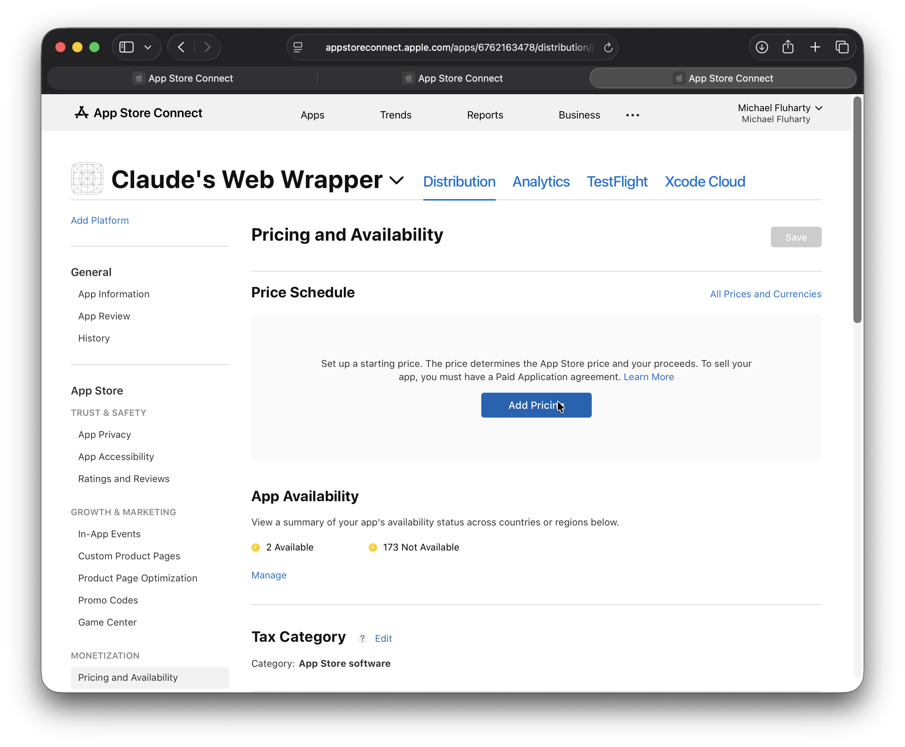 | |
| 217 | |
| 218 | • App Privacy — enter a Privacy Policy URL. You need one even if your app collects nothing. A page on your portfolio that says the app does not collect personal data is enough. |
| 219 | |
| 220 | [Fig. W.39e — App Privacy page with Privacy Policy URL filled in (fluharty.me/privacy) and "Data Not Collected"] |
W.39e — App Privacy page with Privacy Policy URL filled in (fluharty.me/privacy) and "Data Not Collected" 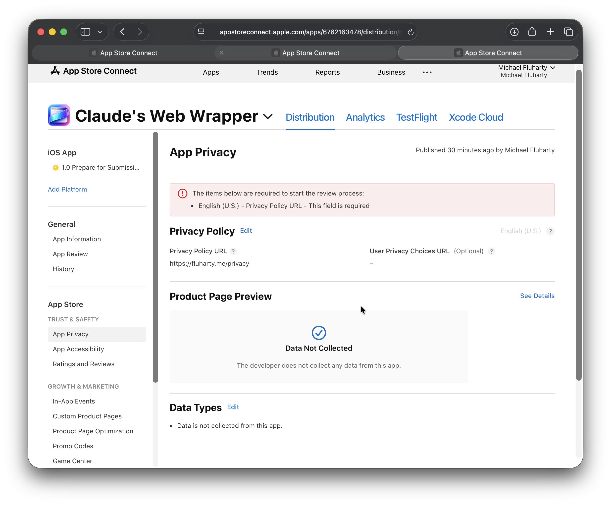 | |
| 221 | |
| 222 | • Age Rating — answer every question No for this app; you land at 4+. |
| 223 | |
| 224 | [Fig. W.39f — Age Ratings wizard: answering content questions (e.g. Violence step — all None)] |
W.39f — Age Ratings wizard: answering content questions (e.g. Violence step — all None) 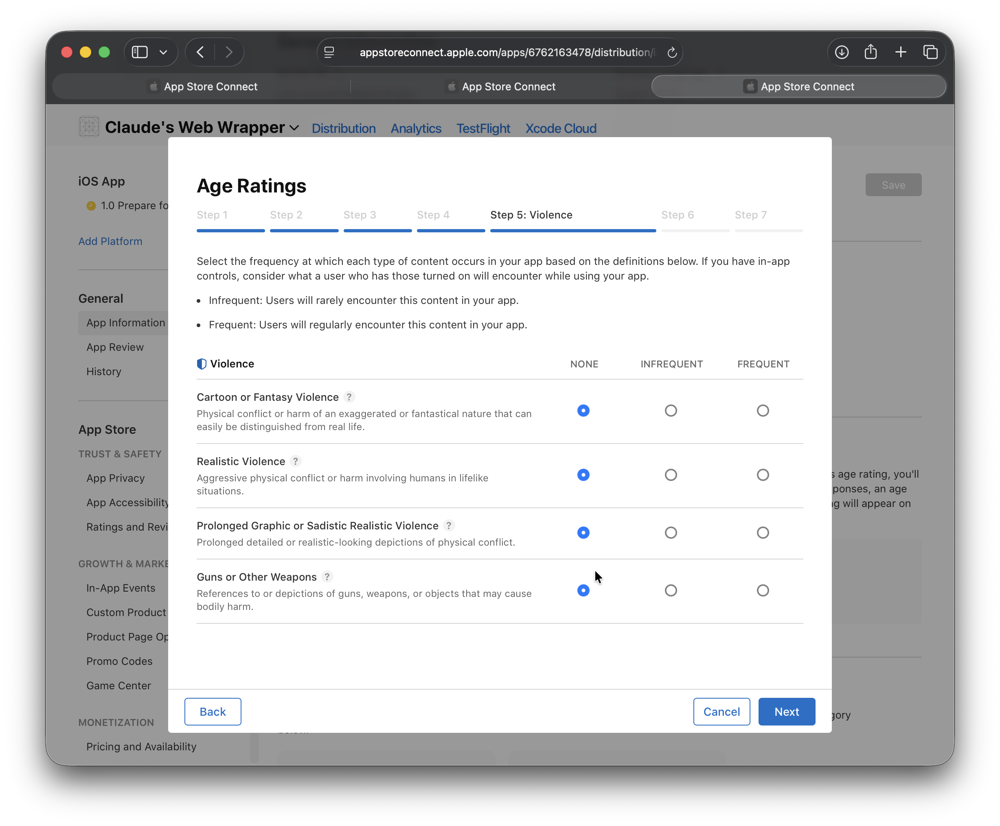 | |
| 225 | |
| 226 | • App Review Information — scroll to the bottom of the iOS 1.0 Version page. This section has two important parts: |
| 227 | • Sign-In Information — this is a radio button selector. The Sign-in required option is selected by default. If your app does not require users to sign in (Claude's Web Wrapper does not — it has no accounts), verify that Sign-in required is not selected before you submit. If it stays selected, the reviewer will expect a test username and password in your notes; when they don't find one, the app gets rejected. |
| 228 | • Contact Information — fill in first name, last name, phone, and email. Notes are optional — put anything a reviewer should know (test credentials if sign-in is required, unusual features, permissions explanations). |
| 229 | |
| 230 | [Fig. W.39g — App Review Information: Sign-in required radio deselected, Contact Information filled in] |
W.39g — App Review Information: Sign-in required radio deselected, Contact Information filled in 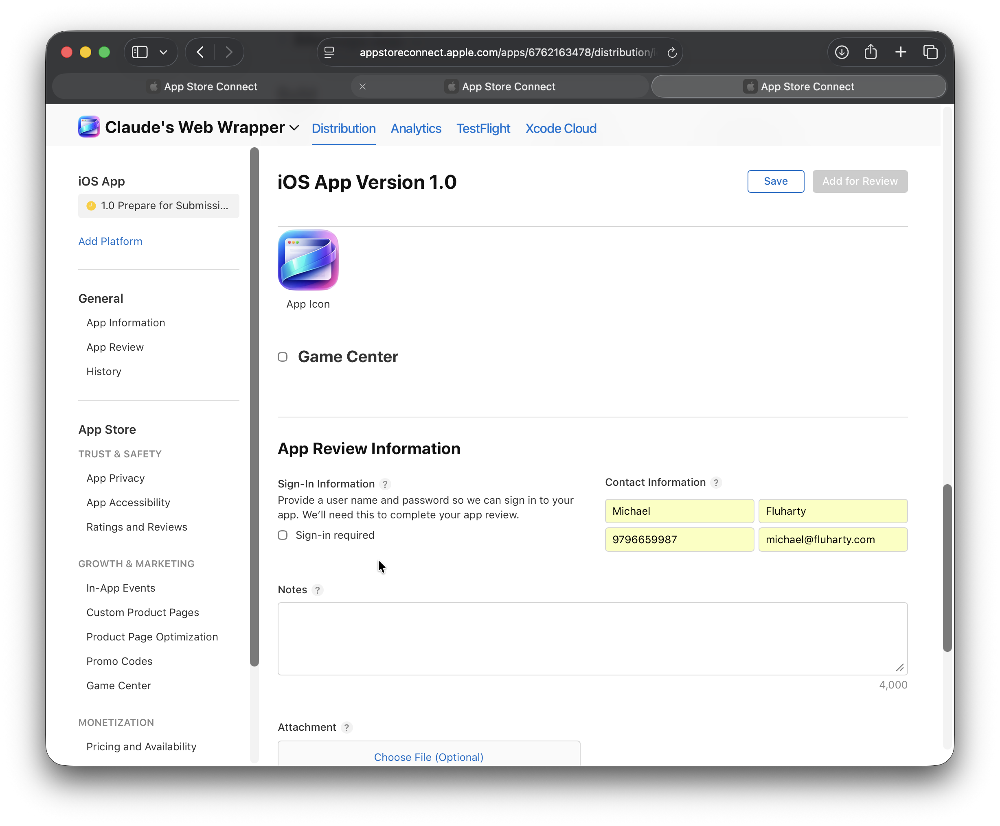 | |
| 231 | |
| 232 | 13.26 Scroll up to the top of the iOS 1.0 page. You also need Screenshots. Find the App Preview and Screenshots section. Apple requires screenshots for every display size your app supports. For a universal iPhone + iPad app, the minimum is one 6.5" iPhone Display (1284 × 2778) screenshot and one 13" iPad Display screenshot. |
| 233 | |
| 234 | Upload the four iPhone screenshots you captured in Section 12 into the iPhone 6.5" Display slot. |
| 235 | |
| 236 | For the 13" iPad Display slot, App Store Connect will block your submission if it's empty — and it will not accept your iPhone-aspect screenshots in the iPad slot (the upload gets rejected for wrong dimensions). You have two real options: |
| 237 | |
| 238 | 1. Capture iPad simulator screenshots. Boot an iPad simulator in Xcode (for example iPad Pro 13"), run the app, press Cmd+S in the simulator to save a screenshot, repeat for the scenes you want (browser, Under the Hood, source viewer, share sheet). Upload those into the iPad slot. |
| 239 | 2. Disable iPad compatibility in Xcode. Go to the project's General tab (Section 13.1), find Supported Destinations, and remove iPad. Re-archive, upload a new build, and submit as iPhone-only. App Store Connect then drops the iPad screenshot requirement entirely. |
| 240 | |
| 241 | Option 1 is the right call if you want your app on iPad. Option 2 is the right call if you have not tested on iPad and don't want to ship something half-finished there. Picking option 2 and then adding iPad support in a later version is a clean path. |
| 242 | |
| 243 | [Fig. W.39h — Previews and Screenshots with iPhone 6.5" Display populated: 4 screenshots of Claude's Web Wrapper visible, iPad tab also available] |
W.39h — Previews and Screenshots with iPhone 6.5" Display populated: 4 screenshots of Claude's Web Wrapper visible, iPad tab also available 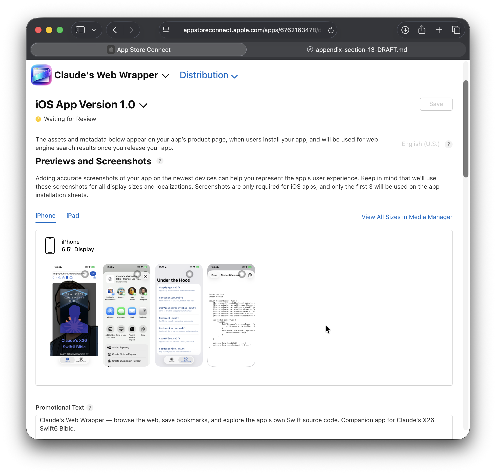 | |
| 244 | |
| 245 | 13.27 Click Add for Review in the top right. App Store Connect checks your submission and shows you a modal listing anything still missing. Common ones on a first submission: |
| 246 | |
| 247 | • You must upload a screenshot for 13-inch iPad displays. |
| 248 | • You must complete the Contact Information section. |
| 249 | • You must enter a Privacy Policy URL in App Privacy. |
| 250 | • You must set up Content Rights Information in App Information. |
| 251 | • You must select a primary category for your app. |
| 252 | |
| 253 | [Fig. W.39b — "Unable to Add for Review" checklist listing remaining required items] |
W.39b — "Unable to Add for Review" checklist listing remaining required items 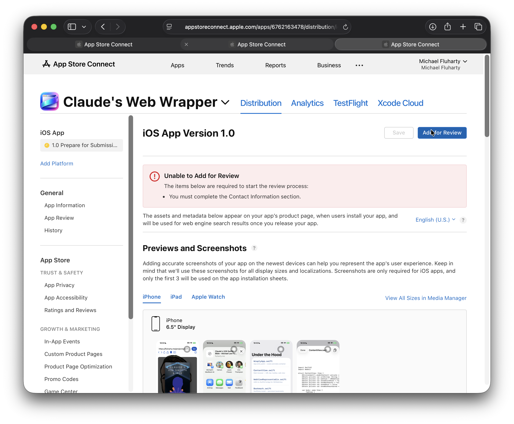 | |
| 254 | |
| 255 | Fix each one, scroll back up, click Add for Review again. Repeat until App Store Connect stops complaining. |
| 256 | |
| 257 | 13.28 When there are no more missing fields, Add for Review changes to Submit for Review (or a Draft Submission panel slides in from the right with a Submit for Review button at the bottom). Click it. Confirm the submission. |
| 258 | |
| 259 | [Fig. W.40b — Draft Submission panel: iOS App 1.0 (2) listed as "Ready to Submit" with Submit for Review button] |
W.40b — Draft Submission panel: iOS App 1.0 (2) listed as "Ready to Submit" with Submit for Review button 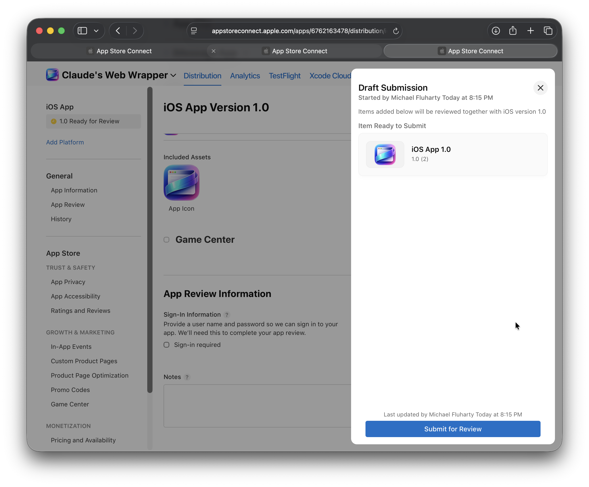 | |
| 260 | |
| 261 | The iOS 1.0 page now shows the status Waiting for Review. The Distribution tab shows the submission ID and the exact time you submitted. Apple's reviewers will look at your build, usually within 24 to 48 hours, and email you when it is approved or rejected. |
| 262 | |
| 263 | [Fig. W.40 — Waiting for Review, submission confirmed] |
W.40 — Waiting for Review, submission confirmed 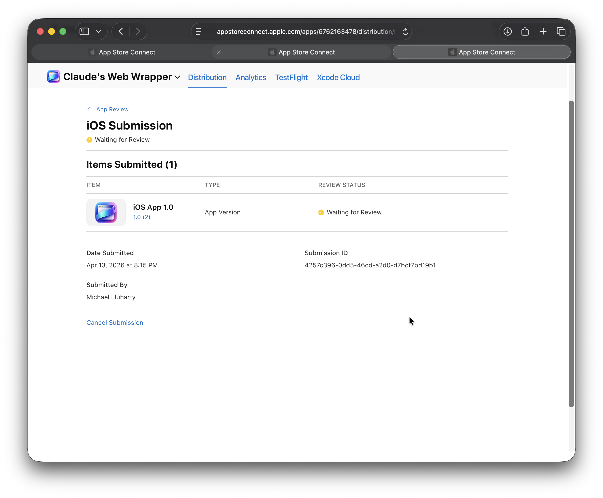 | |
| 264 | |
| 265 | — — — — — — — — — — |
| 266 | |
| 267 | Learning moments from the Claude's Web Wrapper submission: |
| 268 | |
| 269 | 1. Validate App before Distribute App. Validate is a cheap pre-flight. Distribute is a full upload. Run Validate first to catch name collisions, signing issues, and missing assets before you commit to an upload. |
| 270 | 2. Display Name in Xcode General does not flow into the Validate/Distribute Name field. You must change it in both places. The Name field in the validation dialog auto-populates from the target name, which does not change. |
| 271 | 3. Whitespace is invisible and deadly. Clearing with Cmd+A Delete, retyping cleanly, and tabbing out of the field is the only reliable way. Do not backspace. |
| 272 | 4. Processing rejections are silent in App Store Connect. Apple emails them. If a build hasn't appeared in the Build dropdown within thirty minutes, check your inbox. |
| 273 | 5. Do not delete your app record in App Store Connect to reset a bad submission. It leaves the bundle ID in a Removed Apps state and blocks any new submission until you restore the record. |
| 274 | 6. Books category triggers Guideline 4.2 (Minimum Functionality). Pick Education for companion apps. |
| 275 | |
| 276 | None of these are in Apple's documentation in any way you would find before hitting them. Now they are. |